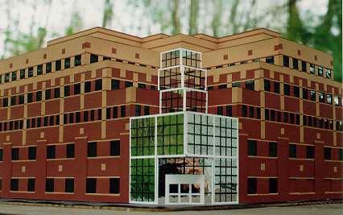

Below are two pictures; one is the real Center for Information Technology, the other is my model. See if you can tell which is which! (OK, so the reflection of me taking the picture gives it away.) I also have some more pictures and a description of the model and its construction. You can visit my model in person on the 4th floor of the real CIT-- I donated the model to the Brown CS Department upon graduation.
